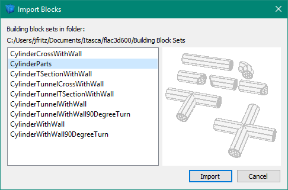
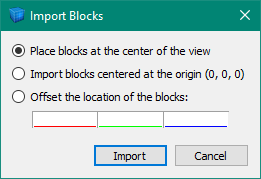
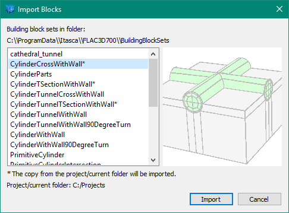

块体集合
块体构建窗格打开时，工具栏中会列出项目中所有现有的块体集合。当前活动的集合是在列表中被选中并显示在窗格中的集合。可以使用标有“添加新集合…”的工具按钮（ ）创建新集合。
）创建新集合。
每个块体集合都可以加载自己的几何数据集以供参考。
导入和导出集合
您可以通过文件菜单，选择来导出集合。
您可以使用导入集合（文件扩展名为 .f3bset 或 .bset）。导入的集合将成为当前集合。您先前加载的集合仍然可用，可从工具栏的集合列表中访问。
块体可以从挤出窗格导出到块体构建窗格。在挤出器中设置好模型后，单击工具按钮以显示挤出视图，然后单击标有“创建块体”的工具按钮（）。
您可以将已保存集合中的块体导入当前集合，同时保持当前集合中的现有块体不变。这可通过导入块体工具按钮（）完成。单击该按钮时，将出现一个对话框，其中列出可供选择的块体集合。或者，您也可以单击该工具按钮右侧的菜单按钮，以更快地访问某个块体集合。无论采用哪种方式，一旦您选择导入块体，就会出现一个对话框，其中包含块体放置选项。


图 1：用于将块体导入集合的对话框。


图 2：导入块体的放置选项。
如图 1 所示，块体集合列表来自某个特定文件夹。您可以将自己的块体集合添加到该文件夹中。您还可以添加一个图像文件，以便在列表中选中某个集合时作为预览显示。该图像文件必须是 PNG 类型，扩展名为 .png，并且基本文件名必须与该块体集合相同。图像大小应为 200x200 像素。
选择要导入的块体集合后，将出现图 2 中的对话框。您可以将导入块体的中心置于视图中心，或将块体中心置于原点（0, 0, 0），也可以让块体相对其原始位置偏移。
导入的文件会被复制到新位置
当您从导入块体对话框导入块体集合时，您选择的文件会被复制到新位置，并从该位置导入。如果您正在使用已保存的项目，新位置将是项目目录；否则将是当前目录。
进行复制的原因是有助于确保您的项目在不同 FLAC3D 安装中使用同一个文件，因为新版本的 FLAC3D 可能包含更新过的块体集合。
如果您的项目文件夹中包含导入块体对话框中某个文件的副本，该对话框会在文件名后加上星号来表示这一点。


图 3：当项目中存在某文件的本地副本时，该对话框会予以指示。
| 这些内容对您有帮助吗？… | FLAC3D © 2019, Itasca | 原文更新于 2020 年 10 月 8 日 |
| 版权与免责声明 | ||